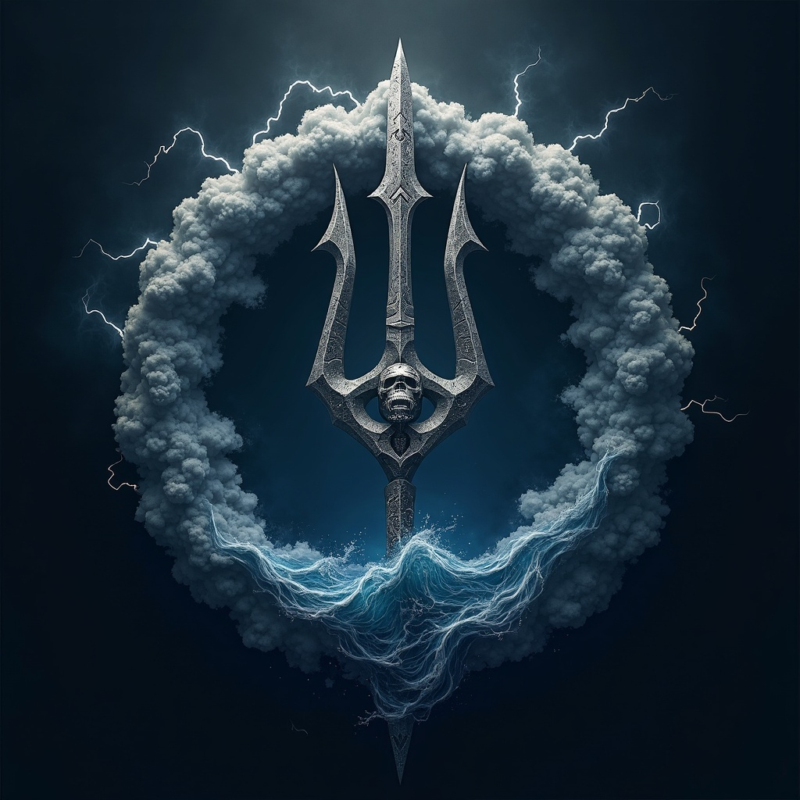

Symbols
- Cracked Helm of Thunder: Forged from storm clouds and lightning, this helm echoes with thunder whenever Njord rages.
- Stormreaver Trident: A jagged weapon that harnesses wind, sea, and electric fury — calling hurricanes or calming catastrophic deluges at his will.
- Stormcloak of Roaring Gales: A cloak woven from gale-force winds and vaporous clouds. It whips around him in battle, tearing at foes and stirring courage in allies.

In the pantheon of Skazka, Njord, the God of Storms and Anger, reigns as a roaring tempest. He is the embodiment of raw power and unbound fury — most akin to Kaos among the Annarr. Njord is neither savior nor destroyer by intent, but rather a force that challenges mortals to seize strength, seize power, or be swept away.
